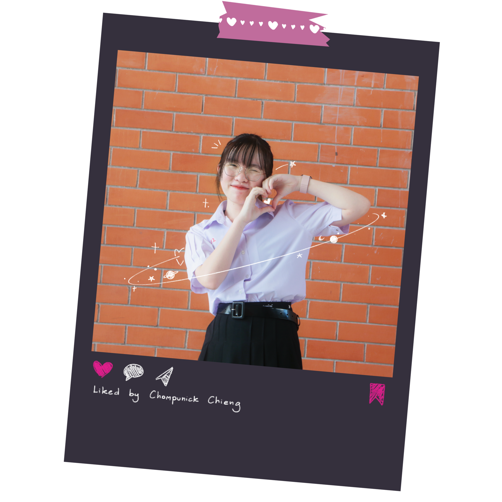

Welcome to a
Chompunick's Portfolio

A website by 3rd-year student (grade 12) from Thailand,
who passionate about Programming and Astronomy
Who is
Chompunick?
> My name is Chompunick Chieng, or you can call me AnnAnn.
My Interest
Guitar
My passion for guitar started when I found a Japanese guitarist called
“せ” (se) on YouTube. His guitar skills and tone have sparked my
interest in guitar and music.
Art
I've started practicing drawing by myself since middle school during
the COVID-19 pandemic. Even though I mainly do digital arts, skills
from frequent practice and knowing colour theory, hand pressure, and
composition makes me available to do UX/UI design, water colour, and
monochrome arts.
Astronomy
I started attending the Astronomy Olympiad from I was in grade 8th
until grade 11th. At first, I was not interested in anything about the
Earth, stars, or constellations, but the more I studied about them,
the more I was into them. However, it is too late to realise how much
I am passionate about Astronomy. I could not get into the national
round in last year's pre-national round. Therefore, I would like to
start my new journey in computational astrophysics at university.
Programming
When I was in elementary school, I was always the first or only one
who finished the fast-typing assignment. My childhood pride motivated
my interest in programming until now. So I have started learning some
programming languages such as C, C++, CSS, Python, and HTML
My Contact
- phone: 065-012-9900
- email: chompunick.c@kvis.ac.th
- lineID: annais2017
- Instagram: chom_chieng
Education
Middle School
Intensive Science and Math Program - Satriwitthaya 2 School In the
royal patronage of the princess mother, Srinagarindra (SW2)
Visit School Website
High School
Kamnoetvidya Science Academy (KVIS)
Visit School Website
Academic Achievements
Grade
4 semester's GPAX 3.92 / 4.00
- Math: 3.94
- Science and Technology: 3.91
- Programming: 4.00
- English: 3.94
- Japanese: 4.00
-
Elective Subject Taken: Computer-Aided Design 1, Japanese 1,
Programming With Python, Graph Theory
- Affective Score
Activities
Astronomy - Programming
Contributed to research: The Study on Solar System’s Asteroid
Distribution Correlation with Fluid Instability Principle
This research aims to study the correlation between solar system
asteroid distribution in the Trojan and Hilda categories and the fluid
instability principle. My senior, Mr.Pavarit Phanichkul, a KVIS student
from batch 6, announced to find a junior that interested in astronomy
and programming to find the equation of asteroid distribution and do a
3D scatter plot in Python, then compare the results with another
simulation from my senior.
Research: AstroDS U-NET/GAN: Revisiting U-NET for Astronomical Image
Denoising Based on SSIM Loss and GAN
Traditional astronomical image denoising methods can lead to missing
information such as loss information of noise, or maybe some unwanted
signal still present. There are many kinds of noise and they are random,
so traditional denoising methods struggle to remove them out. This is
why we need to make a new method to denoise that can overcome those
problems.
Artificial intelligence has a remarkable adaptability to different types
of noises, and its efficiency and accuracy can be presented as the value
of different functions. So we need to simulate noise into the denoised
image to ensure that the performance of our model can denoise as well as
the original image
Programming
- Study in League of Code C++ level 1 and 2 courses in 2022
- Studying in Web Development level 1 and 2 courses in 2024
-
Doing the Front-end website for KVIS students to share their summary
notes for competitions and examinations
Awards
Science
Astronomy POSN 2020-2023
Get into a pre-national round of the Astronomy Olympiad of Chulalongkorn
University from 2022-2021 and Mahidol Wittayanusorn School from
2022-2023 Note: POSN = The Promotion of Academic Olympiad and
Development of Science Education Foundation under the patronage of Her
Royal Highness Princess Galyani Vadhana Krom Luang Naradhiwas
Rajanagarindra (สอวน.)
IYPT 2024
Participated in national round (International Young Physicist Tournament
2024)
CUD Hackathon 2023 Finalist
CUD Hackathon: Good Health and Well Being Innovation finalist
Rocket Special Award: CANSAT-ROCKET Thailand Competition 2023
The CANSAT ROCKET Competition is a contest where teams create a small
satellite called a CANSAT and launch it into the sky using a rocket. The
satellite, about the size of a soda can, is packed with sensors and
tools to do specific tasks like collecting data or running experiments.
Teams compete to see whose satellite can do its job well and send back
information to Earth. It's a fun and educational event that mixes
engineering, physics, and aerospace. We teamed with 5 people and
separated into Rocket team and CANSAT team. I was in rocket team, doing
open-rocket simulation, checking the rocket stability, and analyse the
data after it launched to know the speed and distance of the rocket.
Despite the CANSAT that the microcontroller sensors accidentally crush
just before launched time, our rocket reached the highest altitude among
other 15 finalists.
Honor Award: CANSAT-ROCKET Thailand Competition 2024
After the problem we faced in the previous year, we developed our CANSAT
and ROCKET model, and use solidworks to depict the model of our CANSAT.
Unfortunately, we could get only an honor award and could not get into
final round.
Mathematics
-
Bronze Medal Award: Australian Mathematics Competition 2022
(Intermediate level for grade 9th-10th)
-
Bronze Medal Award: Australian Mathematics Competition 2023 (Senior
level for grade 11th-12th)
Others